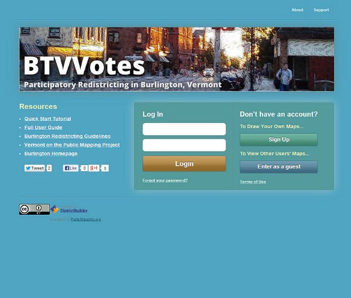

Alert: Both policy AND technology will be discussed below. Bring both your brains. You’ve been warned.
Gotta love the classics
My city is on the tail end of the country’s redistricting cycle. Somehow while Texas was marginalizing Latinos and Dennis Kucinich was getting scribbled out of his constituency, we here in Burlington were waffling over how to deal with triparty politics and the implications of our changing neighborhoods.

I was unrealistic early on about how much of a role technology could play in the process. A survey of neighborhood geographic identity and a do-it-yourself redistricting app (sidebar) were helpful but not game-changing. After years of wrangling, the parties mostly just hashed it out in committee (though the final plan is derived from one made with our DistrictBuilder app), and now in about 6 weeks the voters will approve or reject it.
Which brings me to the question: What would the proposed plan change things for the average BTV citizen? It’s a pretty easy one to answer in the aggregate — all the information is out there: new boundaries, old boundaries, population distribution, polling locations. But these bits are spread out across various sites and articles.
What if there was a way to just ask the question: How will this change things for me?
Under the umbrella of CodeForBTV — the local CodeforAmerica brigade — I put together the basic answering tool. Built for phones (via Bootstrap), the app lets the user plug in their address and get back a list of redistricting plan implications:
The question of individual impact can be answered with a simple spatial query: return some pieces of information based on the polygons that intersect the user’s location. This pointed to some basic building blocks:
- The city redistricting plan — both the old wards and the new ones lumped into one geojson file
- A robust search engine — I went with the Google Maps API because of the amazing viewport-biased geocoding and the built-in typeahead, but given more time I would use Leaflet and a state-hosted geocoder plus typeahead.js
- Spatial query capability — fortunately CartoDB offers all the magic of PostGIS at a URL endpoint, with great styling available as well.
The user-selected address gets converted to lat/lon, then sent to the CartoDB API in an ST_Intersects() query. It returns a map overlay of the old and new district boundaries at the site, and a set of answers to some FAQs about redistricting. It’s a simple app, relying on some robust APIs. I hope it’s useful in getting my neighbors oriented to the landscape of the proposed redistricting. At the very least it’ll save people some time peering at a large paper map in city hall, and at best it’ll head off 40,000 individual “how will this affect me” emails directed at the city councilors and GIS manager. I also hope it’ll be of use to anyone else who wants to present geographic change over time at a user-selected location.
Get the code on github.Originally published at geosprocket.blogspot.com on January 15, 2014.